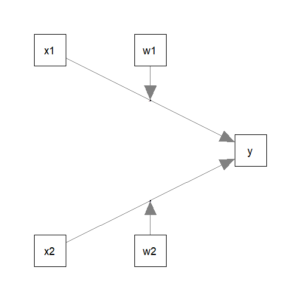
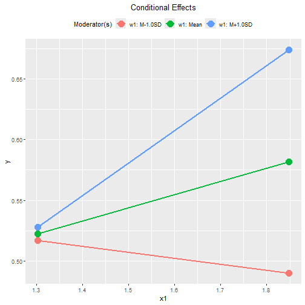
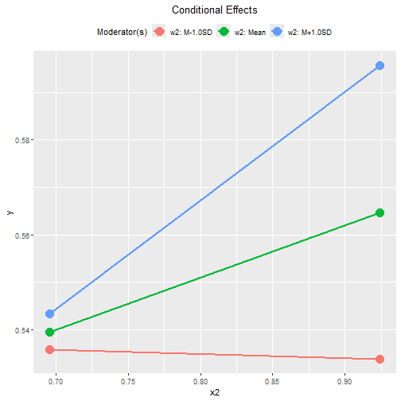
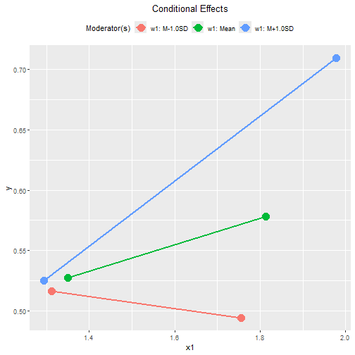
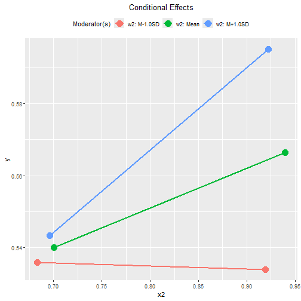
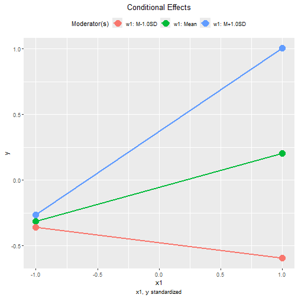
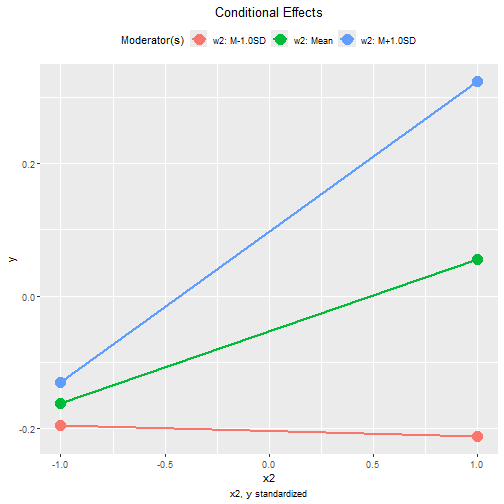

Moderated Regression: Two Predictors and Two Moderators
Shu Fai Cheung & Sing-Hang Cheung
2026-08-27
Source:vignettes/articles/mo_lm_2x2w.Rmd
mo_lm_2x2w.RmdIntroduction
This article is part of a series of brief illustrations of how to use
cond_effects() from the package manymome (Cheung & Cheung, 2024) to estimate the
conditional effects when the model parameters are estimated by ordinary
least squares (OLS) multiple regression using lm(). For
moderated mediation tested by OLS regression, please refer to this article.
(Articles in this series had duplicated sections to make each of them self-contained.)
Data Set and Model
This is the sample data set used for illustration:
library(manymome)
dat <- data_mod_2x2w
print(head(dat), digits = 3)
#> y x1 x2 w1 w2 c1 c2
#> 1 0.46 1.55 0.73 2.06 1.13 2.69 0.43
#> 2 0.49 1.54 0.78 2.29 1.56 3.47 0.15
#> 3 0.69 1.45 0.96 1.98 1.91 2.75 0.43
#> 4 0.83 1.81 1.07 2.52 1.60 3.00 0.51
#> 5 0.53 1.36 0.70 1.83 0.98 3.79 0.62
#> 6 0.51 1.78 0.92 1.94 1.66 1.80 0.56This dataset has 7 variables:
one outcome variable (
y),two predictors (
x1,x2),two moderators (
w1,w2),two control variables (
c1andc2).
Suppose this is the model being fitted, with control variables omitted from the plot for readability:

Fit by Regression
The path parameters can be estimated by multiple regression using
lm():
lm_y <- lm(
y ~ w1*x1 + w2*x2 + c1 + c2,
data = dat
)These are the estimates of the regression coefficients of the paths:
summary(lm_y)
#>
#> Call:
#> lm(formula = y ~ w1 * x1 + w2 * x2 + c1 + c2, data = dat)
#>
#> Residuals:
#> Min 1Q Median 3Q Max
#> -0.210561 -0.046282 -0.000192 0.045746 0.217473
#>
#> Coefficients:
#> Estimate Std. Error t value Pr(>|t|)
#> (Intercept) 2.234274 0.294081 7.597 1.31e-12 ***
#> w1 -0.797684 0.120573 -6.616 3.62e-10 ***
#> x1 -1.167658 0.160032 -7.296 7.70e-12 ***
#> w2 -0.236512 0.128024 -1.847 0.0662 .
#> x2 -0.364031 0.215891 -1.686 0.0934 .
#> c1 0.006922 0.010930 0.633 0.5273
#> c2 -0.058162 0.052763 -1.102 0.2717
#> w1:x1 0.628532 0.074538 8.432 8.18e-15 ***
#> w2:x2 0.356141 0.158749 2.243 0.0260 *
#> ---
#> Signif. codes: 0 '***' 0.001 '**' 0.01 '*' 0.05 '.' 0.1 ' ' 1
#>
#> Residual standard error: 0.07412 on 191 degrees of freedom
#> Multiple R-squared: 0.6038, Adjusted R-squared: 0.5872
#> F-statistic: 36.38 on 8 and 191 DF, p-value: < 2.2e-16Conditional Effects
We can now use cond_effects() to estimate the effects of
x1 and x2 on y for different
levels of the moderators, w1 and w2.
Conditional Effects of x1
Suppose we want to estimate the effect from x1 to
y, conditional on w1:
(Refer to vignette("manymome") and the help page of
cond_effects() on the arguments.)
out1 <- cond_effects(
wlevels = "w1",
x = "x1",
y = "y",
fit = lm_y
)
out1
#>
#> == Conditional effects ==
#>
#> Path: x1 -> y
#> Conditional on moderator(s): w1
#> Moderator(s) represented by: w1
#>
#> [w1] (w1) ind SE Stat pvalue Sig CI.lo CI.hi
#> 1 M+1.0SD 2.285 0.269 0.023 11.801 0.000 *** 0.224 0.313
#> 2 Mean 2.032 0.110 0.021 5.222 0.000 *** 0.068 0.151
#> 3 M-1.0SD 1.779 -0.050 0.033 -1.513 0.132 -0.114 0.015
#>
#> - [SE] are regression standard errors.
#> - [Stat] are the t statistics used to test the effects.
#> - [pvalue] are p-values computed from 'Stat'.
#> - [Sig]: 0 '***' 0.001 '**' 0.01 '*' 0.05 ' ' 1.
#> - [CI.lo to CI.hi] are 95.0% confidence interval computed from
#> regression standard errors.
#> - The 'ind' column shows the conditional effects.
#> The column ind shows the effects of x1 on
y for different levels of w1.
When w1 is one standard deviation below the mean, the
effect of x1 is -0.050, with a 95% confidence interval
[-0.114, 0.015].
When w1 is one standard deviation above the mean, the
effect of x1 is 0.269, with a 95% confidence interval
[0.224, 0.313].
NOTE: The standard error (SE) and related results are
computed using the pick-a-point approach by Rogosa (1980).
Conditional Effects of x2
The step to compute the conditional effects for the other predictor,
x2, for different levels of w2 is similar:
out2 <- cond_effects(
wlevels = "w2",
x = "x2",
y = "y",
fit = lm_y
)
out2
#>
#> == Conditional effects ==
#>
#> Path: x2 -> y
#> Conditional on moderator(s): w2
#> Moderator(s) represented by: w2
#>
#> [w2] (w2) ind SE Stat pvalue Sig CI.lo CI.hi
#> 1 M+1.0SD 1.666 0.229 0.071 3.218 0.002 ** 0.089 0.370
#> 2 Mean 1.332 0.110 0.047 2.358 0.019 * 0.018 0.203
#> 3 M-1.0SD 0.998 -0.008 0.070 -0.120 0.904 -0.147 0.130
#>
#> - [SE] are regression standard errors.
#> - [Stat] are the t statistics used to test the effects.
#> - [pvalue] are p-values computed from 'Stat'.
#> - [Sig]: 0 '***' 0.001 '**' 0.01 '*' 0.05 ' ' 1.
#> - [CI.lo to CI.hi] are 95.0% confidence interval computed from
#> regression standard errors.
#> - The 'ind' column shows the conditional effects.
#> When w2 is one standard deviation below the mean, the
effect of x2 is -0.008, with a 95% confidence interval
[-0.147, 0.130].
When w2 is one standard deviation above the mean, the
effect of x2 is 0.229, with a 95% confidence interval
[0.089, 0.370].
Plotting the Conditional Effects
Conventional Plot
The output of cond_effects() has a plot
method for plotting the conditional effects:
plot(out1)
plot(out2)
By default, the lines span the range of one standard deviation below and above the mean of the predictor.
The plot can be customized in a lot of ways. Please refer to the help
page of plot.cond_indirect_effects() for available
options.
Tumble Plot
If the distribution of the x variable may vary for
different levels of the moderators, a version of tumble graph
proposed by Bodner (2016) can be plotted
by adding graph_type = "tumble":
plot(out1,
graph_type = "tumble")
The distributions of x1 vary as the level of the
moderator w1 changes: the mean of x1 is lower
and the standard deviation smaller when w1 is one standard
deviation below its mean, and has a higher mean and larger standard
deviation when w1 is one standard deviation above its
mean.
Therefore, the tumble graph is a better way to visualize the
moderating effect of w1 on the effect of
x1.
plot(out2,
graph_type = "tumble")
In this example, the distributions of x2 for the three
levels of moderator w2 are similar. For x2,
the conventional graph is sufficient.
Standardized Conditional Effects
Although OLS can be used to estimate and test the unstandardized effects, it is inappropriate for forming the confidence intervals for the standardized effects. See Yuan & Chan (2011) on the issue of standardized regression coefficients.
To form nonparametric bootstrap confidence intervals for effects to
be computed, add boot_ci = TRUE, R to the
number of bootstrap samples (should be 5000 or even 10000, for multiple
regression), and seed (set it to an integer to ensure the
results are reproducible).
The standardized conditional effects from x1 and
x2 to y conditional on w1 and
w2 can be estimated by setting standardized_x
and standardized_y to TRUE.
This is the output for x1:
std1 <- cond_effects(
wlevels = "w1",
x = "x1",
y = "y",
fit = lm_y,
boot_ci = TRUE,
R = 5000,
seed = 54532,
standardized_x = TRUE,
standardized_y = TRUE
)
#> 19 processes started to run bootstrapping.
std1
#>
#> == Conditional effects ==
#>
#> Path: x1 -> y
#> Conditional on moderator(s): w1
#> Moderator(s) represented by: w1
#>
#> [w1] (w1) std CI.lo CI.hi Sig ind
#> 1 M+1.0SD 2.285 0.635 0.529 0.741 Sig 0.269
#> 2 Mean 2.032 0.259 0.158 0.350 Sig 0.110
#> 3 M-1.0SD 1.779 -0.117 -0.272 0.029 -0.050
#>
#> - [CI.lo to CI.hi] are 95.0% percentile confidence intervals by
#> nonparametric bootstrapping with 5000 samples.
#> - std: The standardized conditional effects.
#> - ind: The unstandardized conditional effects.
#> When w1 is one standard deviation below its mean, the
standardized effect of x1 is -0.117, with a 95% confidence
interval [-0.272, 0.029].
When w1 is one standard deviation above its mean, the
standardized effect of x1 is 0.635, with a 95% confidence
interval [0.529, 0.741].
This is the output for x2:
std2 <- cond_effects(
wlevels = "w2",
x = "x2",
y = "y",
fit = lm_y,
boot_ci = TRUE,
R = 5000,
seed = 54532,
standardized_x = TRUE,
standardized_y = TRUE
)
#> 19 processes started to run bootstrapping.
std2
#>
#> == Conditional effects ==
#>
#> Path: x2 -> y
#> Conditional on moderator(s): w2
#> Moderator(s) represented by: w2
#>
#> [w2] (w2) std CI.lo CI.hi Sig ind
#> 1 M+1.0SD 1.666 0.227 0.111 0.344 Sig 0.229
#> 2 Mean 1.332 0.109 0.030 0.196 Sig 0.110
#> 3 M-1.0SD 0.998 -0.008 -0.132 0.136 -0.008
#>
#> - [CI.lo to CI.hi] are 95.0% percentile confidence intervals by
#> nonparametric bootstrapping with 5000 samples.
#> - std: The standardized conditional effects.
#> - ind: The unstandardized conditional effects.
#> When w2 is one standard deviation below its mean, the
standardized effect of x2 is -0.008, with a 95% confidence
interval [-0.132, 0.136].
When w2 is one standard deviation above its mean, the
standardized effect of x2 is 0.227, with a 95% confidence
interval [0.111, 0.344].
Conventional Plot Standardized Conditional Effects
The plot() method can also be used on the standardized
conditional effects, although the only differences are the values
displayed on the axes:
plot(std1)
plot(std2)
Other Moderated Regression Models
The function cond_effects() has no limit on the number
of moderators and the number of predictors with their effects
moderated.
The demonstrations of other moderated regression models can be found in the list of articles.
The levels for the moderators are controlled by
mod_levels() and related functions in the same way whether
a model is fitted by lavaan::sem() or lm().
Please refer to other articles (e.g., vignette("manymome")
and vignette("mod_levels")) on how to estimate effects in
other models analyzed by multiple regression.